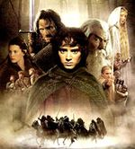

Blade: The Edge of Darkness
 De: La Frikipedia, la enciclopedia extremadamente seria.
De: La Frikipedia, la enciclopedia extremadamente seria.

|
La información contenida en este artículo es una mínima parte de su jugo total, así que ponte los guantes, saca el tupperwere y empieza a exprimir el tema. Si lo haces serás recompensado con una galleta en almíbar y algo más.
|
Blade, The Edge of Darkness es un juego inventado por siete señores, cuatro mujeres y dos cabras. En realidad era un trabajo para el instituto del hijo de una de las cabras, pero se lo robaron y se llevaron 15 euros con 89 céntimos a su costa. El juego solo es compatible con el primer modelo de ordenador del mundo, el Billingates 1889, con los demás funciona muy mal, creando problemas como perdidas de datos, descargas involuntarias de pornografía e incluso en algunos casos, la muerte. Calló en quiebra por plagio a El Señor de los Anillos.
¿Qué hay que hacer?
Para pasarse el juego tienes que elegir uno de los cuatro personajes(cada uno con un nivel inicial) y arrancar el mayor numero de cabezas a enemigos como orcos, minotauros o peligrosos patos marrones bicefalos. Es una copia de El Señor de los Anillos pero con piedras en vez de anillos.
Cuando llegas al antepenúltimo nivel te conceden una espada sagrada, que no es ni mas ni menos que un palo forrado de piel de melocotón masticado.
Personajes
 Propuesta para la portada del juego. Rechazada por razones que nadie se explica
Puedes elegir hasta cuatro personajes, se rumorea que si te lo pasas 15251452 veces seguidas sin armas, solo con puñetazos, te regalan un personaje llamado Maripili, que canta y baila con los orcos feliz, y todo el mundo se vuelve bueno.
- Turnakaram: Es un joven vasco. Se dedica a coleccionar navajas de dos metros con las que apuñala y decapita a sus enemigos. El nivel inicial de este es en las montañas de Euskadi, donde un grupo de graciosos se ha ido de botellón a unas casas abandonadas en la cima. Como no se tienen en pie es fácil matarlos, pero si te vomitan encima, lo cual es normal con la turcia que llevan, quedaras envenenado.
- Sargón: Hijo de Arathorn. No es más que una copia cutre de Aragorn, el del Señor de los Anillos. Pero este es medio calvo y mide como su compañero Naglfar, solo que este es un enano y Sargón simplemente es bajito. Su nivel inicial es su casa, donde se ha olvidado las llaves y debes intentar salir. Como te cabreas las pagaras con todos tus vecinos. Algunos le conocen como Don Quijote.
- Zoe: Como ya tenían demasiados plagios del Señor de los Anillos cambiaron su raza de elfo por amazona. Se dedica a pasear en mayas y con una fusta castigando a todo el que encuentra. Como estos no opondrán resistencia es muy fácil pasarse el juego con ella. Su nivel inicial es en Perú, pues se perdió cuando iba a las tierras de la Tierra Media.
- Nagflar: Es un enano. Además es de la raza de los enanos(sí, hoy me levante gracioso). Es un leñador medio ciego que confunde los orcos con arboles. Su nivel inicial es una copia de las minas de Morriah de El Señor de los Anillos pero en vez de buscar la salida busca un libro para leer en las tardes de lluvia.
Enemigos
- Orcos: Es el enemigo base, cuando no saben que poner en una fase meten mil de estos y resuelto.
- Orcos mayores: Como se levantaron originales crearon estos, que son igual que los otros pero con capucha y gordos.
- Trolls: Se dedican a trollear.
- Minotauros: Son vacas que se escaparon de Euskadi y como están cabradas se dedican a golpear con sus cuchillos jamoneros a los demás.
- No-Muertos: Son como los muertos pero andan y vomitan. Su peor ataque es bailar Thriller.
- Vampiros: Brillan en la oscuridad y se dedican a rodar películas malas con nombres como Crepúsculo.
- Golems: Son señores grandes pintados de gris.
- Velaskiaf: Es el demonio ese de la primera del Señor de los Anillos, que no podía pasar, y decidió cambiar de trabajo para jugar aquí.
- Dal Gurak: Es el malo del juego. Cuando después de ocho horas peleando contra él le derrotas te dice que hay otro más malo.
- El malo más malo: O señor del caos, es como Smigol pero más feo.
Autor(es):
- Shadowmura
- Not so friki
- Sandiasangrante
Frikipedia 2005-2016, Licencia
GFDL 1.2 - Extraído por FrikiLeaks